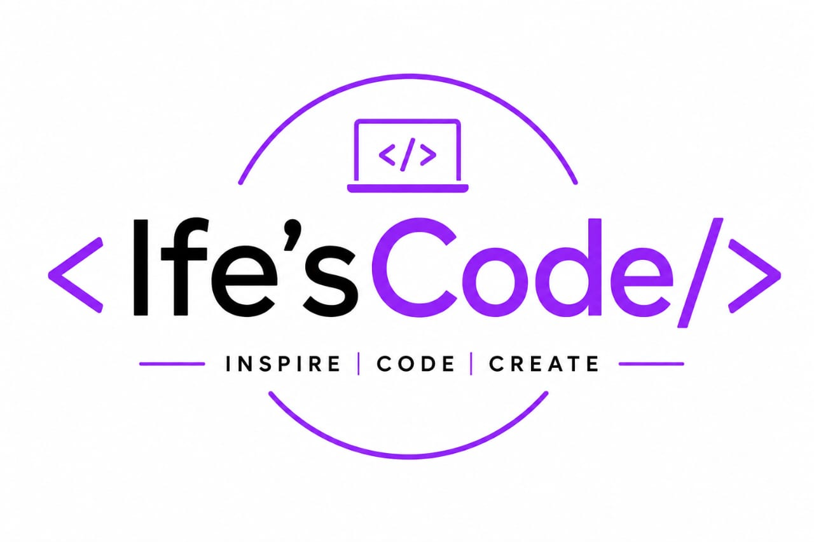

Hello, my name is Agbodike Ifechukwu Faith. I am a student, a writer, and a future software developer. This website reflects my journey as a full-stack software developer. My journey as a developer never began as an easy path; every great achievement begins with a single step. The step I have taken is stepping into technology to learn how it has solved problems and brought solutions that have greatly made a positive impact on the world.
As a student, I have faced moments of doubt and obstacles in my journey; however, each experience has strengthened me to keep pushing even when it's overwhelming. My determination to keep learning is what has brought the existence of this website. Through this website, I will share my story and the skills I am developing, the lessons I have learned, and the vision that inspired me to move forward.
Whether you are a fellow learner, a developer, or simply someone curious about my journey, I am glad you are here. I hope my experience encourages you to believe in the power of persistence, continuous learning, and self-improvement.
Thank you for visiting my site, and welcome to my journey of becoming a full-stack software developer. Stay with me as I walk you through my webpage.
"The future depends on what you do today"--Mahatma Gandhi
I believe that every great achievement begins with a decision to start. My journey into Tech did not start with serious equipment, but with curiosity, determination, and a desire to build something attainable. As a student with a passion for growth, I have learned that success is not always dependent on fast movements but smart ones. Let me tell a story. While growing up, I avoided contact with people and kept fewer friends than usual; I did all that because I believed I was avoiding problems, but as years passed, I began to understand a better approach to life. Being too reserved is not a way out of trouble; it will only shrink your chances of achieving your dreams. But maintaining mental and emotional stability. "True strength is staying calm when others make it difficult to do so" Met my first set of friends that helped explore my social life; we bonded through love and care while exploring. In my fifth year in secondary school, I was able to get my certificate of NBA basketball through their encouragement to participate. In essence, growth also needs communication and association with the right people. Explore, try new things, visit places, don't limit yourself to stories in movies–experience it. Beyond coding, I enjoy learning new things, solving problems, and challenging myself to grow. I understand that success requires patience, consistency, and resilience, and I am committed to developing these qualities as I progress in my career.
Technology has become one of the most powerful tools for solving real life problems. i became interested in software development because i wanted to understand the magic behind the applications
The ability to transform ideas into digital solutions fascinated me. Every website i visit reminds me that someone imagined it before bringing it into reality. that is the
power of imagination
Software development enables me to envision things in my mind and bring them to life; it creates a space for creativity and ideas to flourish. I spent most of my time sketching building plans, designs on book covers, and paintings on the wall.
My journey has always begun with curiosity. The more I learned, the more interested I became in the endless possibilities that technology offers. I realised that software development combines creativity, problem-solving, and continuous learning, which are qualities I value greatly.
Before I started coding, I've always kept one thing in mind–The journey won't be easy. I have already prepared myself for the worst, and there's no plan to give up. I was told it was like learning an entire new language or learning how to drive a car. I wondered what type of language that would have no letters; I went on a research study and found out what really gives a code meaning are those commas and brackets we mostly ignore when writing an essay in school. In my Years in secondary school, fixing my punctuation marks was a big problem; I felt it didn't matter and found it stressful and boring. Who would have thought I would have to depend on punctuation marks to bring my imagination into reality?
Choosing software development was one of the most important decisions I have made, and I am excited to continue growing, learning, and building for the future.
links to some coding resources i have used:
learn on coursera
learn on freecodecamp
When I was choosing a career path for myself, I wanted something that would allow me to express my ideas, creativity, and imagination. I thought about different career options and eventually found two paths that felt suitable for me: Software Development and Nursing. During my final year in secondary school, I applied for Nursing and took the JAMB examination with the hope of securing admission. At that time, I did not apply for Software Development because I lacked the resources and opportunities to pursue it. I passed my examination, and of course, I was happy. However, deep down, something felt incomplete because I knew Nursing was not the only path I truly wanted. I made the difficult decision to turn down the admission that year and hoped for another opportunity to pursue what truly connected with my passion. The following year, I wrote JAMB again and still applied for Nursing. My plan was to complete Nursing first and later return to technology when I had the resources. Many people might ask why I didn't choose Software Development from the beginning. The reason was simple: at the time, most institutions that provided practical technology training were private universities, and they were beyond what I could afford. Everything changed when I met my mentor, Doctor Smart Okpi, who took me on a clearer path and guided me in the right direction. Through his guidance and influence, I started my journey into tech, and within a few weeks, I was already building something meaningful. This experience taught me that resilience is not just about waiting for things to become easy. It is about finding a way forward despite limitations. My journey may not have started exactly as I imagined, but every step has brought me closer to becoming the person I want to be. My journey has always begun with curiosity. The more I learned, the more interested I became in the endless possibilities that technology offers. I realised that software development combines creativity, problem-solving, and continuous learning, which are qualities I value greatly. Before I started coding, I've always kept one thing in mind–The journey won't be easy. I have already prepared myself for the worst, and there's no plan to give up. I was told it was like learning an entire new language or learning how to drive a car. I wondered what type of language that would have no letters; I went on a research study and found out what really gives a code meaning are those commas and brackets we mostly ignore when writing an essay in school. In my years in secondary school, fixing my punctuation marks was a big problem; I felt it didn't matter and found it stressful and boring. Who would have thought I would have to depend on punctuation marks to bring my imagination into reality? Choosing software development was one of the most important decisions I have made, and I am excited to continue growing, learning, and building for the future..
| skills | level | status |
|---|---|---|
| HTLM | beginner | learning |
| CSS | beginner | Learning |
| JavaScript | beginner | Learning |
| Git and Github | beginner | Learning |
| Responsive Web Design | beginner | Learning |
| Front-End Development | beginner | Learning |
| Back-End Development | beginner | Learning |
My vision is to become a skilled Full-Stack Software Developer who uses technology to create solutions that improve lives and solve real-world problems. I do not simply want to learn how to code; I want to understand how technology can be used to make a meaningful impact. I hope to build applications that are useful, accessible, and capable of helping people in different areas of life. As someone who is also interested in healthcare, I am excited by the possibility of combining technology with other fields to create innovative solutions. I believe that the future belongs to those who are willing to learn, adapt, and use their knowledge to serve others. In the years ahead, I see myself continuously learning new technologies, building impactful projects, collaborating with other developers, and inspiring people who are beginning their own journeys. my vision is not to succeed but also to create opportunities and positive change whenever can.
If you are young and have a dream, do not wait for the perfect time to begin. Start with what you have and learn from where you are. Every expert was once a beginner, and every success story started with a single step. Do not allow fear, mistakes, or the opinions of others to stop you from pursuing your goals. Growth comes from trying, failing, learning, and trying again. The world is constantly changing, and knowledge has become one of the most valuable assets anyone can possess. Invest in yourself, remain curious, and never stop learning. Your background does not determine your future; your determination and actions do. Believe in your potential, stay consistent, and remember that progress is made one day at a time.
this website represents the beginning of my journey, not the end of it.
thank you for visiting and being part of my story.